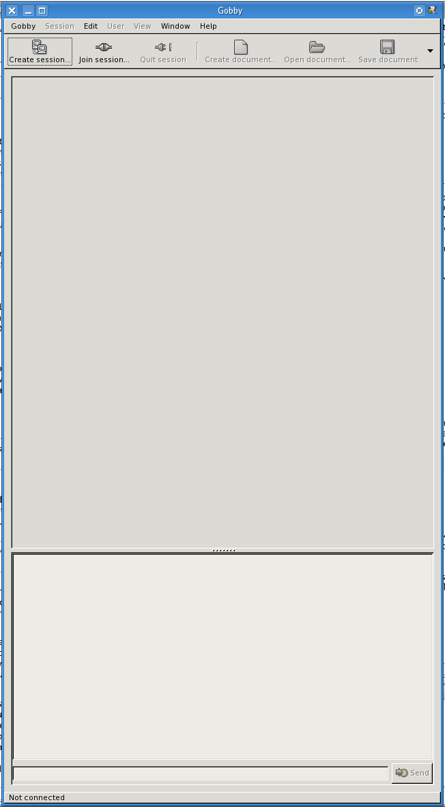
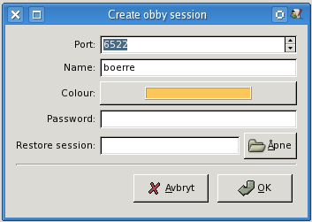
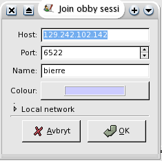
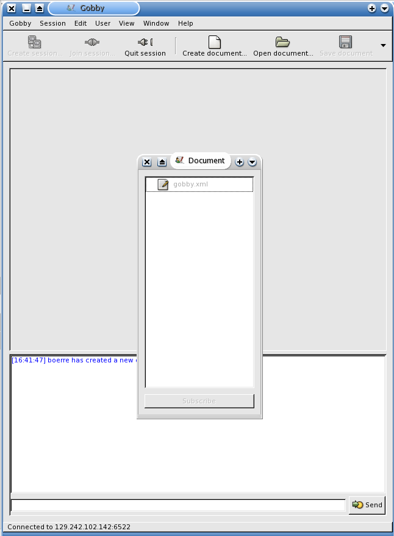
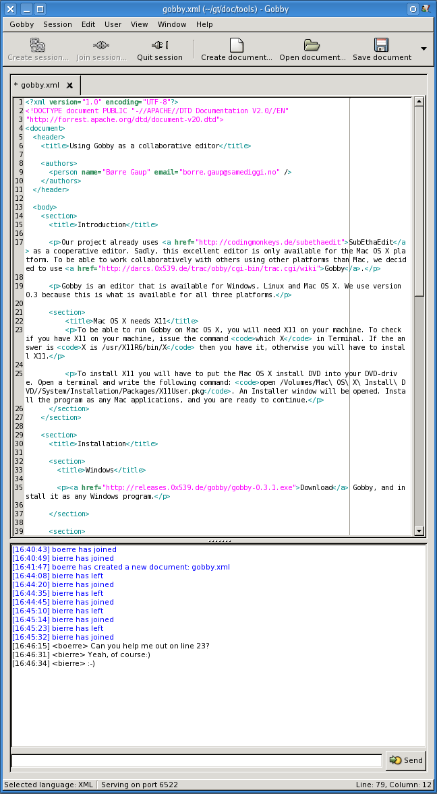

Our project already uses SubEthaEdit as a collaborative editor. Sadly, this excellent editor is only available for the Mac OS X platform. To be able to work collaboratively with others using other platforms than Mac, we decided to use Gobby for that purpose. We use version 0.4x. (0.3 and 0.4 aren't compatible)
The installation is documented on Gobbys download page.
This depends a bit on your distribution. For debian-based distributions (Debian, *buntu)
a simple sudo apt-get install gobby should suffice. If you have a Red Hat-based distribution (Fedora, Mandrake, CentOS),
the magic chant should be: sudo yum install gobby. For Gentoo it is: sudo emerge gobby.
You could also opt for the long and winding road of installing from source, but that really shouldn't be necessary.
To be able to run Gobby on Mac OS X, you will need X11 on your machine. To check if
you have X11 on your machine, issue the command which X in Terminal. If the answer is X is /usr/X11R6/bin/X then you have it, otherwise you will have to install X11.
To install X11 you will have to put the Mac OS X install DVD into your DVD-drive.
Open a terminal and write the following command: open /Volumes/Mac\ OS\ X\ Install\ DVD//System/Installation/Packages/X11User.pkg. An Installer window will be opened. Install the program as any Mac applications,
and you are ready to continue.
The easiest way to install Gobby for Mac OS X, is fetching and installing one of our tarballs. If you have a PowerBook, choose the ppc version,
if you have a MacBook, choose the intel version. This will be placed on your desktop
as a file called gobby-fink-<version>.tar.bz2, where <version> is either ppc or intel. This is actually a tarball of Fink compiled for Mac OS X. Unpack this file using the following command in Terminal:
sudo tar xjf $HOME/Desktop/gobby-fink-<version>.tar.bz2 -C /. You now have an installation of Fink unstable, containing gobby in the folder /sw.
Again, if you want to take a little longer path, you must install the X11-SDK. The
next step is to install Fink to your own machine, change /sw/etc/fink.conf so that the line that reads Trees: local/main stable/main stable/crypto becomes Trees: local/main unstable/main unstable/crypto. Update fink by issuing the command /sw/bin/fink selfupdate. You can now install gobby using the command /sw/bin/fink -y install gobby. This is going to take a l-o-o-ng time, depending on the speed of your internet connection
and processor. Suggestion: Write this command shortly before going to bed, and then
sleep well.
sudo ln -s /sw/bin/gobby /Applications/Gobby.
As Gobby is a cross-platform program, it works the same on all platforms. Mac OS X users will probably feel a little surprised to find that most of the shortcuts are bound to the Ctrl button, and not to the Command button (e.g. Save is Ctrl-S, not Command-S).
In Windows and Linux you can search for Gobby in the menus. The fastest way under
Linux is to hold the Alt button down and then press F2. A small dialog should appear.
Write gobby into the text field and press enter. In Mac OS X you will find Gobby in the Applications
folder. You will end up with a window looking like this: 
At the top you see a menubar, then a toolbar. Third is the editing pane, where you edit documents. Below the editing pane is the message pane. Here you can discuss with the other peers, and see when other peers open documents. Below the message pane is a text field where you can write messages to other peers. At the bottom is the status bar.
Before you can begin editing documents and send messages to your peers, you will have to either create or join a session. If you are the owner of document, then you will have to create a session, else you will have to join a session.
Press the «Create session» button (the doublecomputer image in the upper left corner). A dialog pops up: .
Leave the Port and Name field as they are, if you don't have a particular reason for changing it. Fill in a password if you want that in the dialog that pops up. Now press Ok. Open the file you want to edit the usual way, then you are ready to go.
Press the «Join session» button (the next button to the right, the connected cords). A dialog will pop up: .
If you are on the same network as your peer, you can press the small triangle, with the label «Local network» to see other machines that are running Gobby. If your peer is somewhere else, that peer will have to give it's internet address (i.e., IP number) to you. If the peer does not know this number (or if you don't know your own), there is a nice service at http://whatismyipnumber.com/, which answers exactly that question. Glue in the 12-number series (including intermediate dots) in the Host: field. The next field, Port:, contains a number, e.g. 6522. Leave it unchanged. The third field gives your user name, leave that as well. Then there is a colour field, indicating the colour of your text. Change it if you don't like it (or if the program tells you that this colour is taken by your co-participant). Press ok when you are finished. After a short while you will end up with a window like this: .
If your peer has open documents you can join them by pressing the document you would like to co-edit, and then pressing the «Subscribe button« at the bottom of the Document list window (yes, at the bottom, and no, doubleclicking the document name will not suffice). The document will be opened in the editing pane. Note that you also have the possibility to «chat» with your peers below in the bottom pane below the editing pane.The resulting window you see below: 
If you are the owner of the document you will have to save the document before you quit a session. Save the document, then press the «Quit session» button (the disconnected cords), and then you are done.